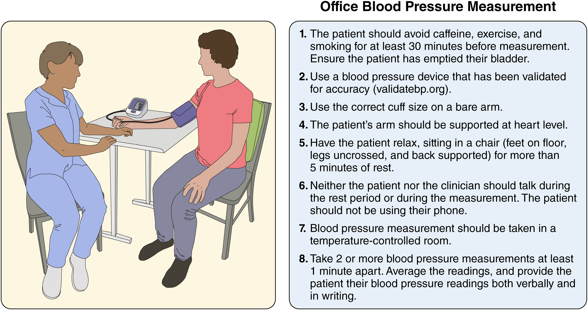
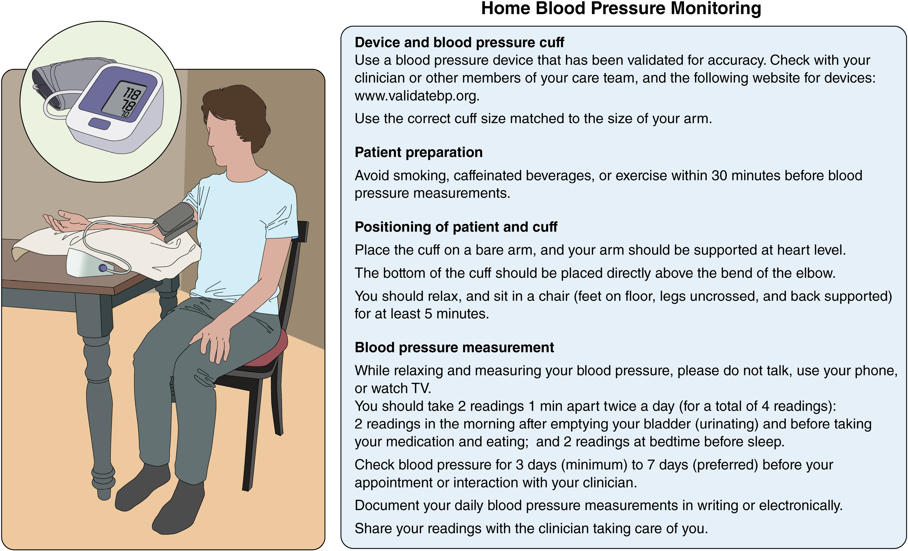

Phần 1: Định Nghĩa, Phân Loại Huyết Áp, PREVENT & Quy Trình Đo Chuẩn Xác
Một điểm mới mang tính nền tảng trong Hướng dẫn 2025 là Ủy ban biên soạn khuyến cáo sử dụng phương trình PREVENT™ (Predicting Risk of CVD EVENTS) thay thế cho các Phương trình thuần tập tổng hợp (PCEs) cũ để ước tính nguy cơ tim mạch 10 năm ở người lớn tăng huyết áp chưa có bệnh tim mạch lâm sàng. Sự thay đổi dựa trên 5 cơ sở dữ liệu y khoa:
Huyết áp ở người trưởng thành không mang thai được phân chia thành 4 mức độ dựa trên trung bình của ≥ 2 lần đo cẩn thận thu được trong ≥ 2 dịp khám khác nhau:
| Phân Loại Huyết Áp (Categories) | Huyết Áp Tâm Thu (SBP) | Toán Tử | Huyết Áp Tâm Trương (DBP) |
|---|---|---|---|
| Huyết áp Bình thường (Normal) | < 120 mm Hg | VÀ | < 80 mm Hg |
| Huyết áp Tăng nhẹ (Elevated) | 120 – 129 mm Hg | VÀ | < 80 mm Hg |
| Tăng Huyết Áp Độ 1 (Stage 1) | 130 – 139 mm Hg | HOẶC | 80 – 89 mm Hg |
| Tăng Huyết Áp Độ 2 (Stage 2) | ≥ 140 mm Hg | HOẶC | ≥ 90 mm Hg |
Sai sót trong kỹ thuật đo huyết áp rất phổ biến. Hướng dẫn khuyến cáo sử dụng phương pháp dao động ký (oscillometric) với thiết bị tự động thay thế cho phương pháp nghe (auscultatory) truyền thống.

1. Tránh caffeine, tập thể dục và hút thuốc 30 phút trước khi đo; đảm bảo bàng quang rỗng.
2. Sử dụng thiết bị đo đã được kiểm chứng độ chính xác (tra cứu tại validatebp.org).
3. Sử dụng kích cỡ bao quấn bít (cuff) chính xác trên cánh tay trần.
4. Cánh tay của bệnh nhân phải được nâng đỡ ở ngang mức tim.
5. Cho bệnh nhân thư giãn, ngồi trên ghế (bàn chân chạm phẳng trên sàn, không bắt chéo chân, tựa lưng) hơn 5 phút.
6. Cả bệnh nhân và người đo không nói chuyện trong lúc nghỉ và đo; bệnh nhân không dùng điện thoại.
7. Đo trong phòng có kiểm soát nhiệt độ.
8. Thực hiện ít nhất 2 lần đo cách nhau tối thiểu 1 phút. Tính trung bình các kết quả và cung cấp bằng lời nói/văn bản.
Theo dõi huyết áp tại nhà kết hợp với các tương tác thường xuyên từ đội ngũ y tế đa chuyên khoa sử dụng phác đồ chuẩn hóa giúp cải thiện kiểm soát huyết áp.

• Thiết bị: Dùng máy đo đã được xác thực (validatebp.org) với bao đo quấn cánh tay có kích cỡ phù hợp.
• Chuẩn bị: Không hút thuốc, uống caffeine hoặc tập thể dục trong 30 phút trước khi đo. Quấn bao đo trên cánh tay trần, mép dưới cách nếp khuỷu 2cm, cánh tay đặt ngang mức tim. Ngồi thư giãn (hai chân chạm sàn, không bắt chéo chân, tựa lưng) tối thiểu 5 phút.
• Quá trình đo: Không nói chuyện, không dùng điện thoại hay xem TV. Đo 2 lần cách nhau 1 phút, ngày đo 2 thời điểm (buổi sáng: sau đi tiểu, trước ăn/uống thuốc; buổi tối: trước khi đi ngủ). Theo dõi ít nhất 3 ngày (tốt nhất là 7 ngày) trước khi tái khám và ghi chép lại.
Các thiết bị không băng quấn (bao gồm đồng hồ thông minh) hiện KHÔNG được khuyến cáo để chẩn đoán hoặc quản lý tăng huyết áp do thiếu độ chính xác và tin cậy (COR 3: No Benefit LOE C-LD).
| HA Phòng Khám (Office) | HA Tại Nhà (HBPM) | ABPM Ban Ngày | ABPM Ban Đêm | ABPM 24 Giờ |
|---|---|---|---|---|
| 120 / 80 mm Hg | 120 / 80 mm Hg | 120 / 80 mm Hg | 100 / 65 mm Hg | 115 / 75 mm Hg |
| 130 / 80 mm Hg | 130 / 80 mm Hg | 130 / 80 mm Hg | 110 / 65 mm Hg | 125 / 75 mm Hg |
| 140 / 90 mm Hg | 135 / 85 mm Hg | 135 / 85 mm Hg | 120 / 70 mm Hg | 130 / 80 mm Hg |
| 160 / 100 mm Hg | 145 / 90 mm Hg | 145 / 90 mm Hg | 140 / 85 mm Hg | 145 / 90 mm Hg |
| Nhóm Bệnh Nhân | Thể Tăng Huyết Áp | HA Phòng Khám | HA Ngoài Phòng Khám |
|---|---|---|---|
| Người CHƯA DÙNG thuốc hạ áp | HA Bình thường liên tục (Sustained normotension) | Âm tính (-) | Âm tính (-) |
| Tăng huyết áp liên tục (Sustained HTN) | Dương tính (+) | Dương tính (+) | |
| Tăng huyết áp ẩn giấu (Masked HTN) | Âm tính (-) | Dương tính (+) | |
| Tăng huyết áp áo choàng trắng (White-coat HTN) | Dương tính (+) | Âm tính (-) | |
| Người ĐANG DÙNG thuốc hạ áp | HA được kiểm soát (Controlled HTN) | Âm tính (-) | Âm tính (-) |
| HA không kiểm soát (Uncontrolled HTN) | Dương tính (+) | Dương tính (+) | |
| HA ẩn giấu không kiểm soát (Masked uncontrolled HTN) | Âm tính (-) | Dương tính (+) | |
| Hiệu ứng áo choàng trắng (White-coat effect) | Dương tính (+) | Âm tính (-) |
- COR 2a LOE B-NR Loại trừ THA áo choàng trắng: Ở người chưa điều trị có HA phòng khám ≥130/80 nhưng <160/100 mm Hg, khuyến cáo dùng HBPM/ABPM loại trừ THA áo choàng trắng trước khi xác định chẩn đoán.
- COR 2a LOE C-LD / B-NR Loại trừ hiệu ứng áo choàng trắng: Ở người nghi ngờ THA kháng trị giả tạo hoặc có HA phòng khám tăng cao (≥130/80 nhưng <160/100 mm Hg) khi đang dùng thuốc.
- COR 2a LOE B-NR Theo dõi chuyển dạng: Người có THA áo choàng trắng hoặc THA ẩn giấu cần được định kỳ theo dõi bằng HBPM/ABPM để phát hiện sự chuyển sang THA liên tục thực sự.
- COR 2b LOE B-NR Loại trừ THA ẩn giấu: Ở người chưa điều trị có HA phòng khám bình thường (<130/80 mm Hg), theo dõi ngoài phòng khám có thể cân nhắc để loại trừ THA ẩn giấu.
- COR 2b LOE B-NR THA ẩn giấu không kiểm soát: Ở người dùng thuốc có HA phòng khám <130/80 mm Hg, cân nhắc HBPM/ABPM nhằm phân tầng nguy cơ.
Phần 2: Chiến Lược Quản Lý Lối Sống & Can Thiệp Tâm Lý Xã Hội (Table 12)
Can thiệp lối sống là nền tảng không thể thiếu trong cả phòng ngừa sơ khởi lẫn quản lý điều trị tăng huyết áp ở mọi giai đoạn. Bảng 12 tổng kết 8 can thiệp cốt lõi và mức giảm SBP kỳ vọng:
• Hiệu quả: Giảm ~1 mm Hg SBP cho mỗi 1 kg giảm được. SBP giảm -6 đến -8 mm Hg ở bệnh nhân THA (-3 đến -5 ở người không THA).
• Hiệu quả: Mô hình ăn uống có bằng chứng mạnh nhất, hạ SBP từ -5 đến -8 mm Hg ở bệnh nhân THA (-3 đến -7 ở người không THA).
• Hiệu quả: Hạ SBP từ -6 đến -8 mm Hg ở bệnh nhân THA (-1 đến -4 ở người không THA).
• Hiệu quả: Hạ SBP -5 đến -7 mm Hg (5/1.5 mm Hg).
⚠️ Chống chỉ định nếu có suy thận mạn (CKD) hoặc thuốc giảm bài tiết kali.
• Hiệu quả: Hạ SBP -6 mm Hg ở bệnh nhân THA.
⚠️ Chống chỉ định nếu có suy thận hoặc nguy cơ tăng kali máu.
• Hiệu quả: Hạ SBP từ -4 đến -6 mm Hg ở bệnh nhân THA.
• Hiệu quả: Giảm SBP từ -2 đến -10 mm Hg.
• Hiệu quả: Giảm SBP bổ trợ từ -5 đến -7 mm Hg.
Phần 3: Ngưỡng Khởi Trị Thuốc, Mục Tiêu Điều Trị Tối Ưu & Phác Đồ SPC
- COR 1 LOE A Huyết áp phòng khám ≥ 140/90 mm Hg: Bắt buộc khởi trị ngay bằng thuốc hạ áp kết hợp thay đổi lối sống cho tất cả bệnh nhân.
- COR 1 LOE A (SBP) / C-LD (DBP) Tăng Huyết Áp Độ 1 (130-139/80-89 mm Hg) Nhóm Nguy Cơ Cao: Bệnh nhân đã có Bệnh tim mạch lâm sàng (CVD), Đái tháo đường (DM), Bệnh thận mạn (CKD), hoặc nguy cơ PREVENT 10 năm ≥ 7.5% Khởi trị ngay bằng thuốc hạ áp kết hợp lối sống.
- COR 1 LOE B-R Tăng Huyết Áp Độ 1 Nhóm Nguy Cơ Thấp: Bệnh nhân không có CVD, DM, CKD và nguy cơ PREVENT < 7.5% Thử nghiệm can thiệp lối sống đơn thuần 3–6 tháng. Nếu sau 3–6 tháng HA vẫn ≥ 130/80 mm Hg, khởi trị thuốc hạ áp bổ trợ.
- COR 1 LOE A (SBP) / B-R (DBP) Đối với nhóm nguy cơ CVD cao (CVD, DM, CKD, PREVENT ≥ 7.5%): Mục tiêu SBP khuyến cáo < 130 mm Hg và khuyến khích đạt < 120 mm Hg để giảm thiểu tối đa MACE và tử vong toàn bộ. Mục tiêu DBP < 80 mm Hg.
- COR 2b LOE B-NR Đối với nhóm nguy cơ CVD thấp (PREVENT < 7.5%): Mục tiêu SBP < 130 mm Hg và DBP < 80 mm Hg (khuyến khích SBP < 120 mm Hg) có thể được cân nhắc để ngăn tiến triển tổn thương cơ quan đích.
- COR 1 LOE A Bốn nhóm thuốc đầu tay (First-line): Lợi tiểu Thiazide-type (Chlorthalidone, Indapamide, Hydrochlorothiazide), Chẹn kênh calci DHP (Amlodipine, Felodipine), ACEi (Lisinopril, Perindopril) hoặc ARB (Valsartan, Losartan, Telmisartan). Thuốc chẹn beta không nằm trong nhóm đầu tay trừ khi có chỉ định bắt buộc (bệnh vành, suy tim).
- COR 1 LOE B-R Tăng Huyết Áp Độ 2 (Stage 2): Khởi trị ngay bằng phối hợp 2 thuốc hạ áp đầu tay, ưu tiên Viên Phối Hợp Liều Cố Định (Single-Pill Combination - SPC) để tăng tuân thủ và rút ngắn thời gian đạt đích.
- COR 3: Harm LOE A CHỐNG CHỈ ĐỊNH TUYỆT ĐỐI: Không phối hợp đồng thời 2 thuốc cùng hệ RAAS (ACEi + ARB, hoặc ACEi/ARB + Aliskiren) do nguy cơ suy thận cấp, tăng kali máu nặng và tụt huyết áp.
Phần 4: Tăng Huyết Áp Kháng Trị & Triệt Thần Kinh Giao Cảm Thận (RDN)
Định nghĩa: Trị số HA vẫn nằm ngoài mục tiêu dù đã dùng phối hợp tối ưu ≥ 3 thuốc hạ áp khác cơ chế ở liều tối đa dung nạp (bắt buộc có 1 lợi tiểu); hoặc HA đã kiểm soát nhưng cần từ ≥ 4 thuốc trở lên.
- Xác nhận kháng trị & Loại trừ kháng trị giả (pseudoresistance): Đảm bảo kỹ thuật đo chuẩn; đo HBPM/ABPM loại trừ hiệu ứng áo choàng trắng; đánh giá sự tuân thủ điều trị.
- Ngừng các chất gây tăng huyết áp: NSAIDs, corticoid, thuốc thông mũi, cam thảo, rượu cồn.
- Tối ưu hóa liệu pháp lợi tiểu: Chuyển từ HCTZ sang lợi tiểu Thiazide-like kéo dài & mạnh mẽ hơn: Chlorthalidone (12.5–25 mg/ngày) hoặc Indapamide (1.25–2.5 mg/ngày).
- COR 1 LOE B-R Bổ sung thuốc thứ 4 (Kháng Mineralocorticoid - MRA): Thêm Spironolactone (25–50 mg/ngày) hoặc Eplerenone (25–50 mg x 2 lần/ngày) ở bệnh nhân có eGFR ≥ 45 mL/phút/1.73m². (Nếu không dung nạp: Amiloride 10-20mg, Chẹn Beta, Chẹn Alpha-1, Tác động trung ương, Aprocitentan 12.5mg, hoặc Hydralazine/Minoxidil).
- Sàng lọc nguyên nhân THA thứ phát: Cường aldosterone nguyên phát, OSA, Hẹp động mạch thận.
- Chuyển tuyến chuyên khoa: Nếu HA vẫn không kiểm soát sau 6 tháng.
- COR 2b LOE B-R Chỉ định RDN: Lựa chọn bổ trợ hợp lý ở bệnh nhân THA Độ 2 thực sự (SBP phòng khám 140–180 mm Hg và DBP ≥ 90 mm Hg), eGFR ≥ 40 mL/phút/1.73m², đã tối ưu hóa điều trị thuốc nhưng không kiểm soát được HA, hoặc gặp tác dụng phụ không thể dung nạp.
- Chống chỉ định RDN: THA giao cảm do nguyên nhân thần kinh (neurogenic), phụ nữ mang thai, loạn sản cơ sợi (FMD), động mạch thận đã đặt stent, phình động mạch thận, hẹp động mạch thận có ý nghĩa.
Phần 5: Tăng Huyết Áp Thai Kỳ, Cấp Cứu Tăng Huyết Áp & Quản Lý Chu Phẫu
- COR 1 LOE B-R Điều trị Cơn THA Mức Độ Nặng (≥ 160/110 mm Hg): Bắt buộc khởi trị thuốc hạ áp cấp cứu (Nifedipine uống tác dụng nhanh IR, Labetalol IV, Hydralazine IV) trong vòng 30–60 phút để hạ HA về <160/110 mm Hg nhằm ngừa đột quỵ mẹ.
- COR 1 LOE B-R Điều trị THA Mạn Tính: Đưa mục tiêu huyết áp về < 140/90 mm Hg. Thuốc đường uống hàng đầu: Labetalol (200–2400 mg/ngày) và Nifedipine phóng thích kéo dài ER (30–120 mg/ngày). Second line: Methyldopa, HCTZ.
- COR 3: Harm LOE C-LD / B-NR CHỐNG CHỈ ĐỊNH TUYỆT ĐỐI TRONG THAI KỲ: Atenolol, ACEi, ARB, Aliskiren, Nitroprusside, MRA (Spironolactone) do nguy cơ dị tật bẩm sinh, thiểu ối, suy thận thai nhi và độc tính cyanide.
- COR 1 LOE B-R Phòng ngừa tiền sản giật: Tư vấn dùng Aspirin liều thấp (81 mg/ngày) bắt đầu từ tuần thứ 12 cho phụ nữ nguy cơ cao hoặc trung bình.
- COR 1 LOE C-LD Hypertensive Emergency (HA > 180/120 mm Hg KÈM tổn thương cơ quan đích cấp): Nhập viện ICU ngay. Nhóm không có chỉ định đặc biệt: giảm SBP không quá 25% trong giờ đầu; về <160/100 trong 2–6 giờ tiếp theo; bình thường hóa trong 24–48 giờ.
- COR 1 LOE C-LD Phình tách động mạch chủ ngực cấp tính: BẮT BUỘC giảm khẩn cấp SBP xuống < 120 mm Hg và nhịp tim < 60 bpm trong vòng 20 phút đầu bằng thuốc chẹn beta IV (esmolol/labetalol) TRƯỚC KHI dùng thuốc giãn mạch.
- COR 3: Harm LOE B-NR Severe Hypertension KHÔNG có tổn thương cơ quan đích cấp (Bãi bỏ thuật ngữ Hypertensive Urgency): CHỐNG CHỈ ĐỊNH việc hạ áp nhanh bằng thuốc truyền IV hoặc tăng liều thuốc uống ồ ạt cấp tính. Xử trí bằng thiết lập/tối ưu thuốc uống ngoại trú và tái khám trong 4 tuần.
- COR 1 LOE B-NR Duy trì Chẹn Beta (BB): Bắt buộc tiếp tục BB mạn tính trong suốt giai đoạn phẫu thuật. Ngừng đột ngột BB gây bùng phát giao cảm nguy kịch (COR 3: Harm).
- COR 3: Harm LOE B-R Chống chỉ định khởi trị BB vào ngày phẫu thuật: KHÔNG khởi trị BB ngay trong ngày phẫu thuật cho bệnh nhân chưa từng dùng (gây tăng tử vong và đột quỵ).
- COR 2b LOE B-R Tạm ngừng ACEi/ARB: Cân nhắc tạm ngừng ACEi/ARB 24 giờ trước phẫu thuật lớn để tránh hạ huyết áp sâu khi khởi mê.
- COR 2b LOE C-LD Trì hoãn mổ chương trình: Cân nhắc hoãn mổ nếu SBP ≥ 180 hoặc DBP ≥ 110 mm Hg ở người nguy cơ cao.
Phần 6: Tăng Huyết Áp Thứ Phát, Bệnh Mạch Máu Não & Sa Sút Trí Tuệ
Chiếm 5% đến 25% số bệnh nhân tăng huyết áp. Dấu hiệu gợi ý: THA độ 2/kháng trị, khởi phát <30 tuổi, HA bùng phát đột ngột, tổn thương cơ quan đích không tương xứng, hạ kali máu tự phát/do lợi tiểu, ngáy/OSA, khối u thượng thận tình cờ.
| Nguyên Nhân Thứ Phát | Tỷ Lệ | Biểu Hiện Lâm Sàng Gợi Ý | Xét Nghiệm Tầm Soát & Xác Chẩn |
|---|---|---|---|
| Hội chứng Ngưng thở khi ngủ (OSA) | 25% – 50% | Ngáy lớn, nghẹt thở khi ngủ, THA ban đêm / kháng trị | Bảng câu hỏi STOP-Bang / Berlin Đa ký giấc ngủ (Polysomnography) hoặc đo tại nhà. Treatment: CPAP (≥4h/đêm), GLP-1 RA (tirzepatide giảm SBP 7.6 mmHg). |
| Cường Aldosterone Nguyên Phát (PA) | 5% – 25% | THA kháng trị, hạ kali máu tự phát (chỉ 20-50% có hypokalemia! K+ bình thường KHÔNG loại trừ PA) | Đo PAC, PRA, tỷ lệ ARR (dương tính khi ARR ≥ 30, PAC ≥ 10 ng/dL, PRA <1). Ngừng MRA 4-6 tuần trước đo. Xác chẩn: Nghiệm pháp truyền dịch muối đẳng trương 4h hoặc nạp muối oral. Chụp CT thượng thận / AVS. |
| Bệnh Thận Mạn (CKD) | 14% | Tiền sử đái tháo đường, tiểu máu, creatinine tăng | Điện giải đồ, Creatinine máu (eGFR), Phân tích nước tiểu, Siêu âm thận. |
| Do Thuốc / Rượu cồn | 2% – 20% | Dùng NSAIDs, corticoid, cam thảo, thuốc tránh thai, rượu bia | Hỏi tiền sử dùng thuốc chi tiết, xét nghiệm độc chất nước tiểu. |
| Hẹp Động Mạch Thận (RAS) | 0.1% – 5% | THA kháng trị, phù phổi cấp huyết động đột ngột (flash pulmonary edema). Xơ vữa ĐM (90%) hoặc Loạn sản cơ sợi FMD (<50t). | Siêu âm Doppler ĐM thận, MRA, CT angiography. Lưu ý xơ vữa ĐM thận: Điều trị nội khoa tối ưu (RAASi, statin, aspirin) là lựa chọn hàng đầu; Stenting không vượt trội hơn nội khoa! FMD: Nong bóng không stent. |
⚠️ CẢNH BÁO AN TOÀN: Ngừng ngay thuốc hạ áp nếu SBP < 130 mm Hg (gây hại!). Dùng Nicardipine/Clevidipine IV, tránh nitrat.
• COR 3: Harm SBP > 220 mm Hg CHỐNG CHỈ ĐỊNH hạ SBP < 130! Chỉ hạ thận trọng về 160–180 mm Hg.
• COR 2a LOE B-NR Lấy huyết khối (EVT): Duy trì ≤ 180/105 mm Hg trong 24 giờ.
🛑 CHỐNG CHỈ ĐỊNH (COR 3: Harm, LOE A): Sau tái thông EVT thành công, KHÔNG hạ SBP < 140 mm Hg trong 24–72h (Thử nghiệm ENCHANTED-2 MT & OPTIMAL-BP bị dừng sớm do tăng tàn phế/tử vong!).
• Không tPA/EVT: Nếu HA ≥ 220/120 mm Hg Hạ ~15% trong 24h (COR 2b).
- COR 1 LOE A Bảo vệ tế bào thần kinh & nhận thức: Ở tất cả người lớn tăng huyết áp, kiểm soát SBP tích cực đạt mục tiêu SBP < 130 mm Hg được khuyến cáo mạnh mẽ nhằm ngăn ngừa nguy cơ Suy giảm nhận thức nhẹ (MCI) và Sa sút trí tuệ (Dementia / Alzheimer). Dữ liệu SPRINT-MIND chứng minh 3.5 năm kiểm soát tích cực giúp duy trì hiệu quả bảo vệ tế bào thần kinh lên đến 7 năm.
Phần 7: Tương Tác Thuốc, Chức Năng Tình Dục & Chăm Sóc Hệ Thống Telehealth
| Phối Hợp Thuốc Tương Tác | Cơ Chế Tương Tác | Hậu Quả Lâm Sàng & Hướng Xử Trí |
|---|---|---|
| Verapamil / Diltiazem + CYP3A4 Substrates (Tacrolimus, Statin, DOACs, Eplerenone) | Ức chế enzym CYP3A4 mạnh tại gan và ruột | Tăng nồng độ Tacrolimus (độc thận), Statin (tiêu cơ vân), DOAC (xuất huyết), Eplerenone (sụt áp, tăng K+). Giảm liều hoặc chọn CCB DHP. |
| Patiromer (Gắn Kali) + Thuốc Hạ Áp (Amlodipine, Furosemide, BB, Telmisartan) | Gắn kết làm giảm hấp thu các thuốc hạ áp tại đường tiêu hóa | Xử trí: Bắt buộc uống các thuốc hạ áp cách xa Patiromer ít nhất 3 giờ trước hoặc sau. |
| Thiazide / RAASi + Lithium | Giảm độ thanh thải Lithium qua thận | Tăng nguy cơ ngộ độc Lithium cấp tính. Giám sát nồng độ Lithium máu chặt chẽ. |
| NSAIDs + Tất Cả Thuốc Hạ Áp | NSAID gây giữ muối nước tại thận và co mạch | Làm giảm đáng kể hiệu quả hạ áp của tất cả các nhóm thuốc hạ áp. |
| NSAIDs + ACEi / ARB | Co tiểu ĐM đến (NSAID) + Giãn tiểu ĐM đi (RAASi) | Nguy cơ rất cao gây Suy Thận Cấp (AKI). Hạn chế dùng chung. |
| ACEi + ARB hoặc Aliskiren | Ức chế kép hệ Renin-Angiotensin-Aldosterone | COR 3: Harm Độc thận nặng, tăng K+ máu kịch phát, tụt HA. Absolute Contraindication! |
| CCB Dihydropyridine + ACEi / ARB | ACEi/ARB làm giãn tiểu ĐM đi, giải áp mao mạch ngoại vi | Tương tác có lợi: Giảm đáng kể tác dụng phụ phù chân đặc trưng của CCB DHP. |
| RAASi + Lợi Tiểu Thiazide / Quai | Cân bằng bài tiết Kali tại ống thận | Tương tác có lợi: Thiazide thải K+ bù trừ cho tác dụng giữ K+ của RAASi, giúp ổn định K+ máu. |
- Thuốc gây ảnh hưởng nhiều nhất: Lợi tiểu Thiazide và Thuốc chẹn Beta (ngoại trừ Nebivolol) liên quan nhiều nhất đến rối loạn cương dương ở nam và giảm ham muốn ở nữ.
- Thuốc an toàn & Thân thiện nhất: Thuốc chẹn thụ thể Angiotensin (ARB) có hồ sơ thân thiện nhất, hỗ trợ cải thiện chức năng tình dục.
- Thuốc PDE-5i (Sildenafil, Tadalafil): An toàn khi dùng cùng thuốc hạ áp thông thường, nhưng COR 3: Harm CHỐNG CHỈ ĐỊNH TUYỆT ĐỐI dùng chung với các thuốc nhóm NITRATE do nguy cơ tụt HA nguy kịch.
- COR 1 LOE A Mô hình Chăm sóc Đội ngũ (Team-Based Care): Phối hợp giữa bác sĩ, dược sĩ lâm sàng, điều dưỡng, chuyên gia dinh dưỡng giúp tối ưu hóa tuân thủ và hạ áp vượt trội. Trao quyền cho dược sĩ/điều dưỡng chỉnh liều theo thuật toán.
- COR 1 LOE B-NR Bệnh Án Điện Tử (EHR/HIT): Tích hợp CNTT sàng lọc chủ động bệnh nhân chưa được kiểm soát.
- COR 2a LOE B-R Y Tế Từ Xa (Telehealth + HBPM): Truyền dữ liệu HA từ xa giúp tối ưu điều chỉnh liều thuốc an toàn và bền vững.